Facet 是什么
用 AI 的人不少，但会遇到 Facet 的，多半是下面三类——每一类都有自己的烦恼。
轻度用户：想尝尝鲜，不想花钱
智谱、火山引擎、NVIDIA……这些厂家其实都送免费额度，「羊毛」一直挂在那里。可每家的地址、密钥、用法都不一样，AI 工具一次只能接一家：想换着用就得来回改配置；免费额度又限得严，某家用完，工具立刻报错。
重度用户：一个账号的包月额度不够用
天天高强度用 AI，一个包月账号根本撑不住。多买几家、多开几个账号？切换和管理全靠手动——今天该用哪家、哪个账号还剩多少额度，全凭脑子记，一漏就报错。
小团队：各买各的，没人说得清
每个人自己注册、自己充值，月底各拿各的发票找公司报销。谁用了多少、套餐够不够用，没人知道；账号之间也没法共享——你的额度用不完，同事的早就用光了。
Facet 解决的就是这些：它在你的 AI 工具和各家厂商之间当「总管」——AI 工具只连 Facet 一个地址、用一把密钥；Facet 负责在多个账号之间自动挑选、自动切换，并在浏览器控制台里统一管理和记账：谁用了多少、花在哪儿，都有据可查。免费额度、付费订阅，接进来的都是同一种「渠道」。
flowchart LR U["你的 AI 工具
Claude Code · Cline · 其他"] -->|"一个地址 · 一把密钥"| F["Facet
自动挑额度 · 用完自动换"] F --> A["智谱的免费额度"] F --> B["火山引擎的免费额度"] F --> C["NVIDIA 等其他家的"] F --> D["公司买的付费账号"]
三种用法，对号入座
各家免费额度都接进来轮着用，某家用完自动换下一家；控制台「免费模型」页还告诉你现在有哪些羊毛能薅。日常问答、写文档，基本不用花钱。
多个厂家的包月账号都接上：Facet 在它们之间自动分摊流量，避开单家限流，让每个包月套餐的额度都吃满、不浪费——不用再手动切换。
账号集中到一台 Facet 上共享，每人发一把调用密钥：用量按人分开记，包月费用按用量摊到人头，月底报销、对账有依据。
三种用法还能叠加：先免费用着，不够了再买包月加进来；团队壮大了，再给每人发一把密钥。不管怎么变，AI 工具那边始终只填 Facet 一个地址。
三个词，看懂全手册
你领到或买到的那个 AI 账号（免费额度、付费订阅都算），在 Facet 里叫「渠道」。加了几个渠道 = 聚合了几家的额度。
AI 工具连 Facet 时填的那把「钥匙」。可以给每个人发不同的，随时能停用。
你登录控制台用的「钥匙」。只有你自己用，装完第一件事就是把它换成自己的。
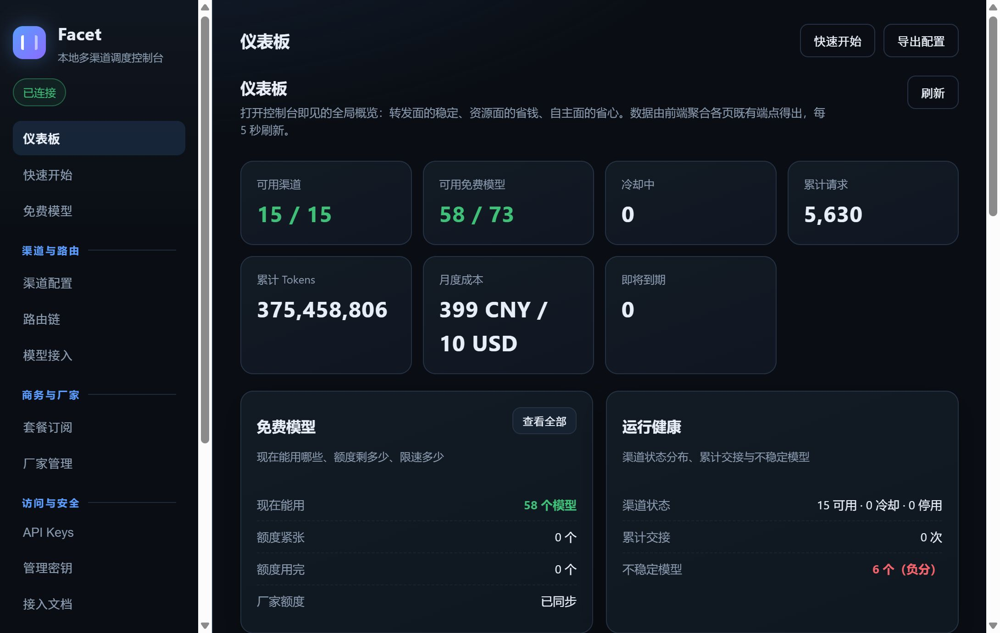
安装
你不需要提前准备任何东西——不用另装 Python，也不用注册账号。按你的电脑选一种方式，装完 Facet 会在后台常驻，并给你一个网页控制台地址。
| 你的电脑 | 怎么装 |
|---|---|
| Windows | 双击安装包 Facet-Setup-x.y.z.exe（x.y.z 为版本号），一路「下一步」 |
| macOS | 终端里运行两行命令（见下方） |
| Linux | 终端里运行两行命令（见下方） |
| 服务器 / NAS | 一条 docker compose up -d |
Windows：双击安装
- 双击安装包按提示点「下一步」，不需要管理员权限，装在你的用户目录里。
- 等安装完成装好后右下角任务栏会出现 Facet 的小图标（托盘），浏览器会自动打开控制台页面。
- （可选）勾选开机自启安装过程中可以勾选「开机自动启动」——勾上之后每次开机 Facet 都在后台待命，不用你手动开。
之后怎么找到它：单击托盘图标即打开控制台；右键图标可以「重启网关」「打开数据目录」「查看日志」和「退出」。
macOS：一条安装命令
git clone https://github.com/hsliuping/Facet && cd Facet
tools/macos/install.sh脚本会自动装好运行环境、把 Facet 注册成开机自启的后台服务，最后做一次自检并打印控制台地址。崩溃了会自动重启，你不用管。
Linux：一条安装命令
git clone https://github.com/hsliuping/Facet && cd Facet
tools/linux/install.sh同上：自动装环境、注册成开机自启的后台服务、装完自检并打印控制台地址。
服务器 / NAS：Docker
docker compose up -d控制台地址是 http://localhost:8787。所有配置和记录都放在你当前目录的 data 文件夹里，容器升级、重建都不会丢。
http://127.0.0.1:8787。之后所有操作都在这个网页里完成，不需要碰命令行。第一次使用
这一章做完，Facet 就能用了。全程在浏览器里点，不需要记命令。
-
打开控制台
浏览器访问
http://127.0.0.1:8787（Windows 装完一般会自动打开）。 - 跟着「新手配置向导」走一遍 向导会自动弹出，一共 8 步——下面跟着截图逐步走。
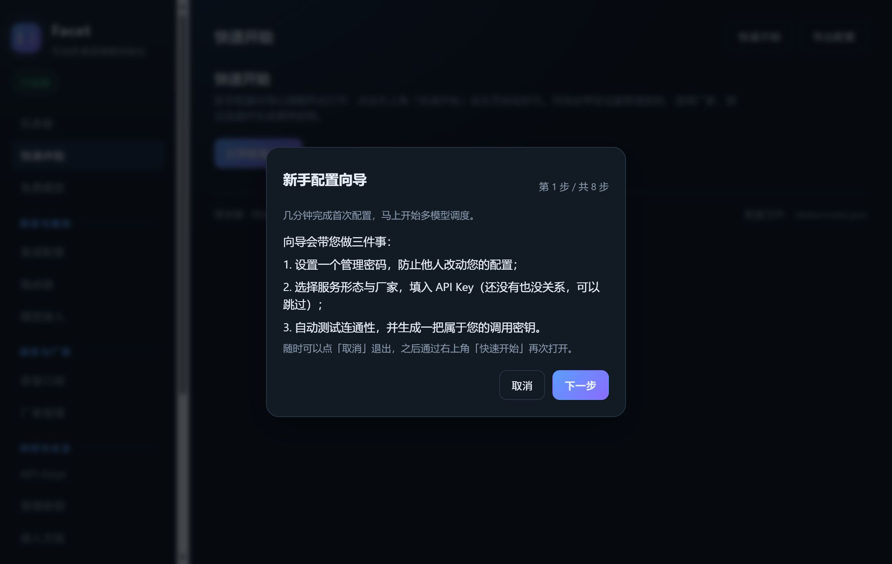
向导 8 步，跟着截图走一遍
第 2 步 · 设置管理密码
管理密码（就是管理员密钥）用来验证改配置、换密钥这类敏感操作。点「设置管理密码」，把默认的 admin 换成你自己的；暂时不想设，点「下一步」跳过也行。
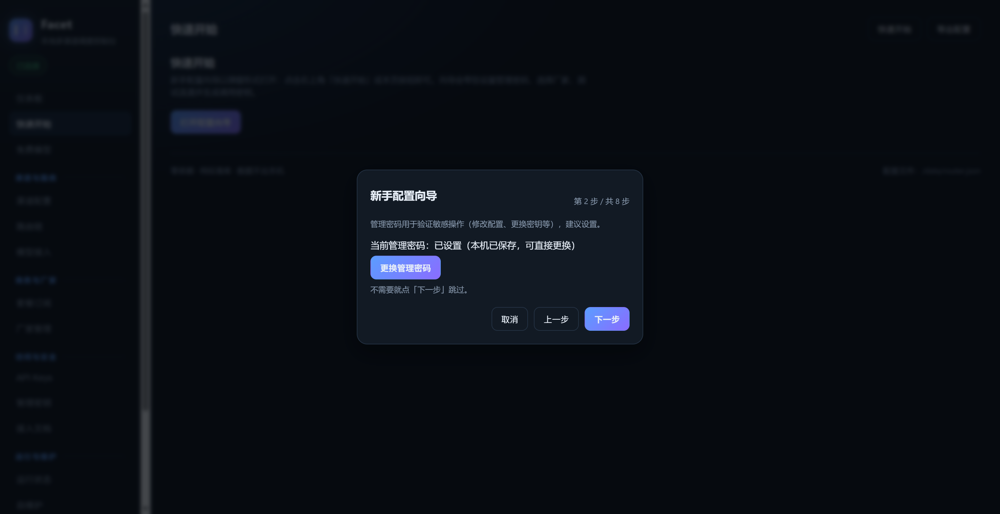
admin 等于家门没锁。只要这台电脑在局域网里有可能被别人访问，就务必在这里换掉它。第 3 步 · 想要哪种服务形态？
想先不花钱，选「有免费额度优先」；已经买了付费的，按你买的形态选「按量付费」「Token Plan 包月」「Coding Plan 包月」或「Agent Plan 包月」——选完之后，下一步只会列出对应形态的厂家。这一步其实就是在回答：你是第 1 章里的哪类用户。
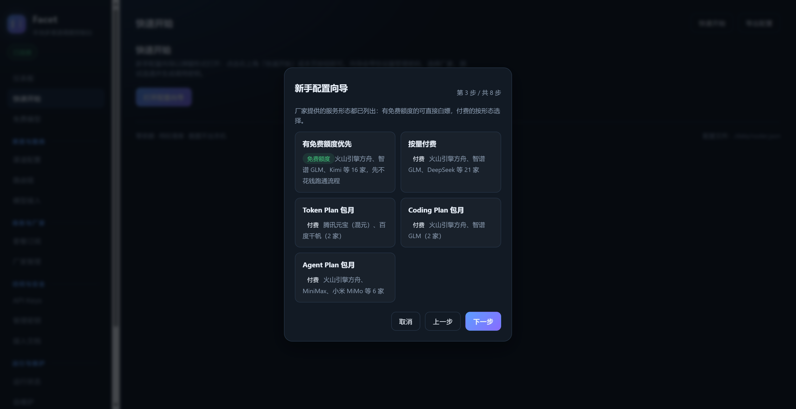
第 4 步 · 选择模型厂家
厂家以卡片列出，卡上标了免费额度摘要（比如「xx 万 tokens / 月」）。挑一家点选——想免费用，就挑额度给得多的。
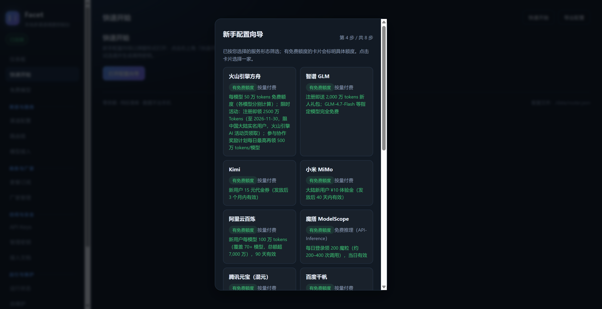
第 5 步 · 填写厂家 API Key
页面给了「前往官方控制台获取」的直达链接，去把 Key 复制回来粘进输入框就行。手头还没有 Key？留空直接点「下一步」也可以，之后在「渠道配置」页补上（第 4 章会讲）。
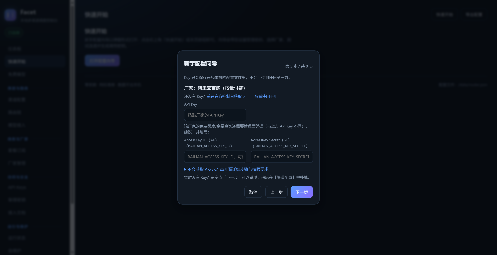
第 6 步 · 测试并保存渠道
Facet 先自动拉取该厂家的模型清单（渠道要写清「这家的哪些模型」），再拿你的 Key 真实调用一次：通过就自动保存渠道并生效，显示测到的模型和延迟；不通过会写出原因——多半是 Key 抄错了，返回上一步重新粘一次就好。
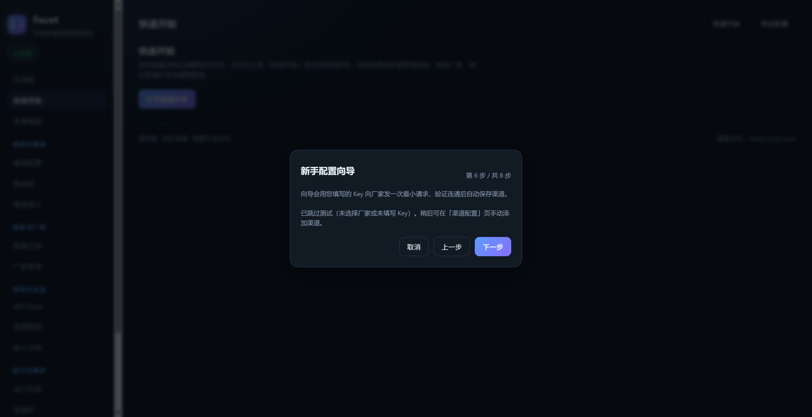
第 7 步 · 生成调用密钥
点「生成调用密钥」，给 AI 工具用的那把钥匙就出来了，可以复制、也可以重新生成（重新生成会吊销旧的）。这把就是第 4 章接 AI 工具时要填的调用密钥；以后忘了，回控制台「API Keys」页随时能查看。
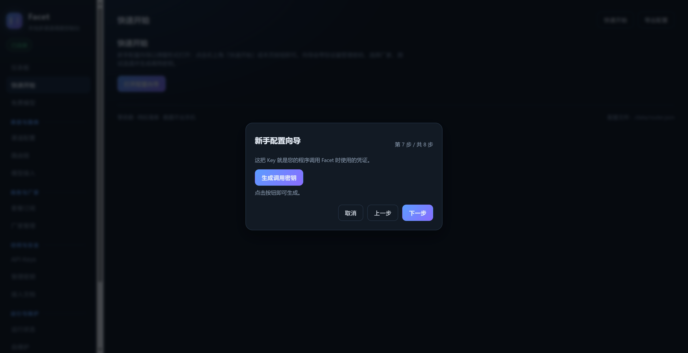
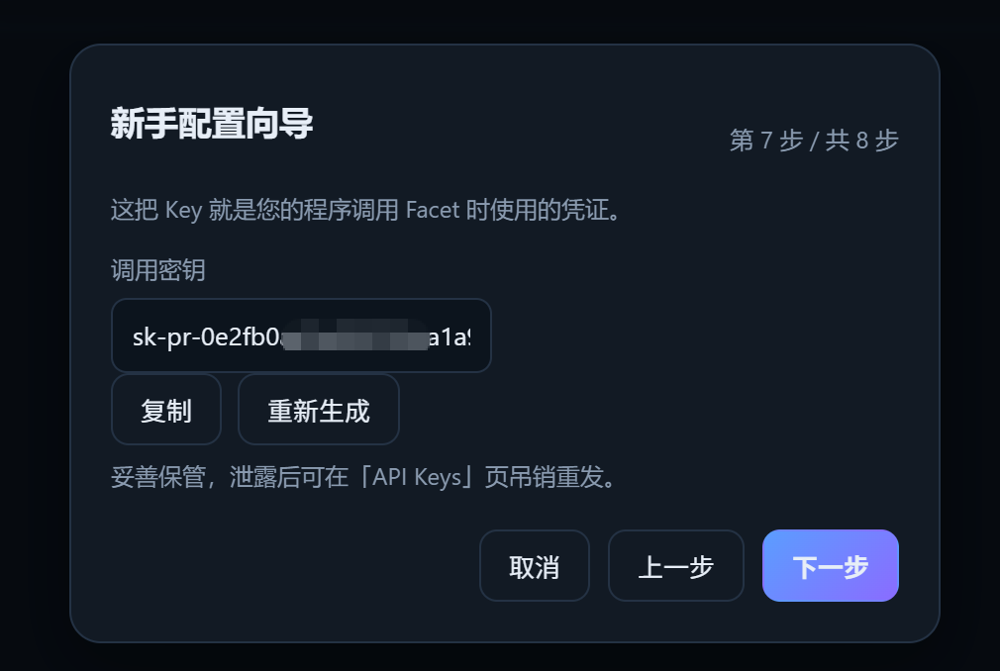
第 8 步 · 一切就绪
这一页就是接 AI 工具要填的两样东西——网关地址和调用密钥，点「复制配置」一键带走；下面还附了一段 curl 命令，可以先拿来验证。点「完成」收工。
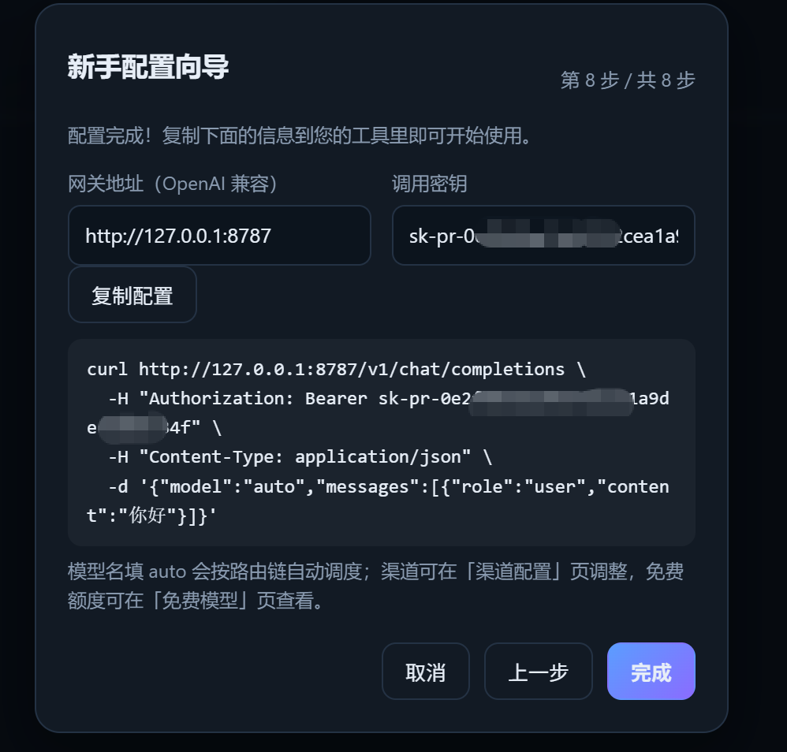
怎么算「装好了」
向导最后一步提示完成，就说明渠道配置好了。真正的验证很简单：按第 4 章把 AI 工具接上，随便问它一句话，能正常回答就是全部打通了。
日常使用
这一章是你装好之后真正会反复用到的五件事：接 AI 工具、加额度、把买来的套餐记好账、给别人用、看用量。
把 AI 工具接上来
大部分 AI 工具都有「自定义 API 地址」这一项，填上 Facet 的地址和你的调用密钥就行：
| 你用的工具 | 地址怎么填 | 密钥填 |
|---|---|---|
| Cline、Continue、Cherry Studio 等 | 选「OpenAI 兼容」，地址填 http://127.0.0.1:8787/v1 | 调用密钥 |
| OpenAI SDK / 其他 OpenAI 类工具 | http://127.0.0.1:8787/v1 | 调用密钥 |
| Claude Code / Anthropic 类工具 | http://127.0.0.1:8787（不要带 /v1） | 调用密钥 |
以 Claude Code 为例，开一个终端，粘这两行（把密钥换成你自己的），再照常输入 claude：
set ANTHROPIC_BASE_URL=http://127.0.0.1:8787
set ANTHROPIC_AUTH_TOKEN=你的调用密钥Mac / Linux 把 set 换成 export 即可。
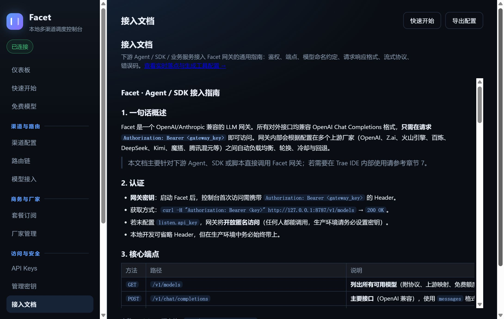
模型名填什么
工具里让你选模型时，填下面这些名字（推荐先用 facet-auto）：
| 填这个名字 | 它的意思 |
|---|---|
facet-auto | 自动帮你挑一家（不知道填什么就用它） |
facet-free | 只用免费额度，一分钱不花 |
facet-agent | 适合让人工智能帮你连续干活的场景 |
facet-cheap | 优先用便宜/低成本的 |
facet-embedding | 做知识库、检索时的「向量化」模型 |
也可以直接填某个具体模型的名字（比如 deepseek-v3.2），Facet 会自动找有这家的渠道去跑。
再加一家的额度
- 去厂商那里领额度、复制密钥按各家的指引申请即可（常见厂商的申请方法见文末参考里的密钥指南）。
- 打开控制台「渠道」页常见厂商都已经列好，只是处于关闭状态。
- 找到那一家，粘贴密钥把复制来的密钥填进去。
- 打开「启用」并保存保存后立刻生效，不用重启，也不用改 AI 工具的任何设置。
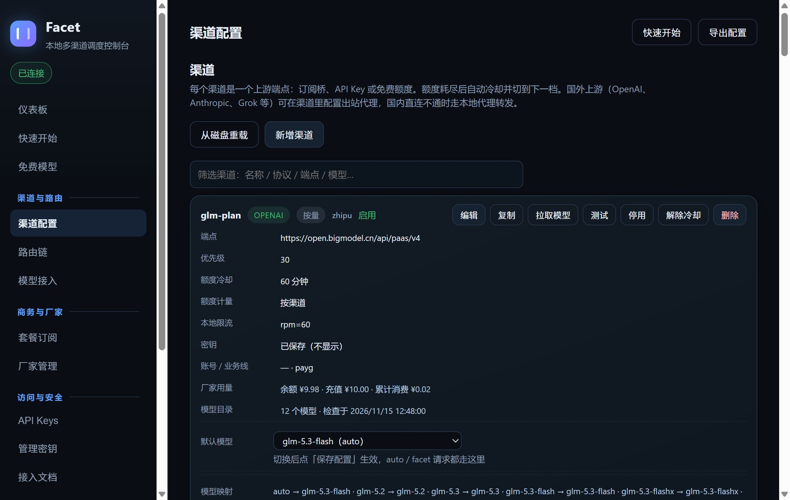
自己买（或公司买）的套餐怎么办
上面加的是「密钥」，让额度能用起来；而花了多少钱、什么时候到期，是另一本账。如果你用的是付费套餐——不管是自己买的还是公司买来报销的——在控制台「套餐订阅」页登记一条就行：套餐名称、价格和币种（CNY / USD / EUR / HKD）、月付还是季付、开始和到期日期，再把它关联到对应的渠道。
- 到期有人提醒：快到期时（默认提前 7 天）控制台首页会亮出提示，不会用到一半才发现断了；
- 每月花多少，自动算：月付、季付、年付会被折算成「每月等效成本」，首页和订阅页都直接给你数；
- 报销有依据：「成员用量」页会把每个订阅的月费，按各成员的用量占比摊到人头——谁用了多少、摊了多少，月底对账直接照着这张表来。
给家人、同事各发一把密钥
打开控制台「API Keys」页面，为每个人签发一把独立的调用密钥。他们在自己的电脑上装好 Facet 客户端（或者连你这台机器）后填各自的密钥即可。某个人不用了，单独停用他那把，不影响其他人。
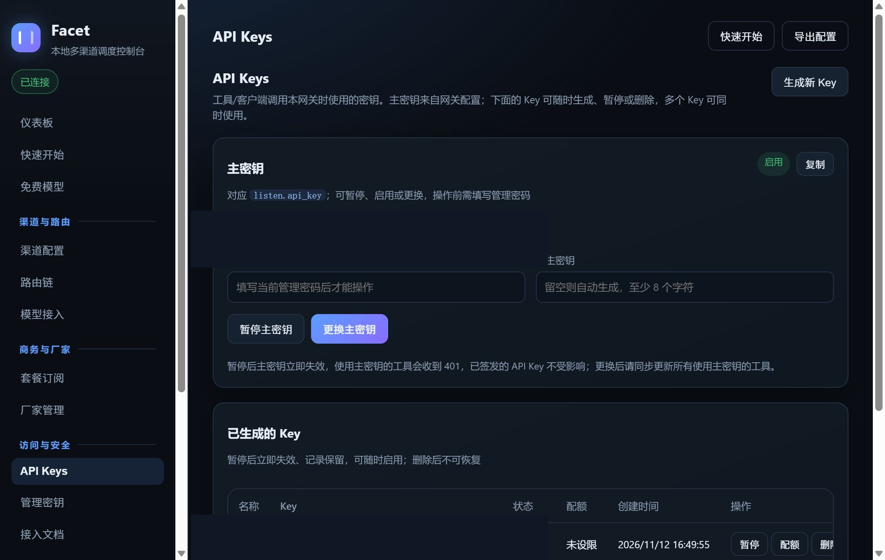
看用量和调用记录
- 「请求日志」页：每条请求用了哪家的额度、成功还是失败，一目了然；
- 「用量报表」页：按天看用量趋势，以及每家渠道各吃了多少；
- 控制台首页：能看到各渠道当前是否正常（被限速或额度用完的会标出来），订阅快到期也会在这里提示；
- 「成员用量」页：每人用了多少请求、多少 token，订阅月费按用量摊到每个人头上——报销对账就看这张表。
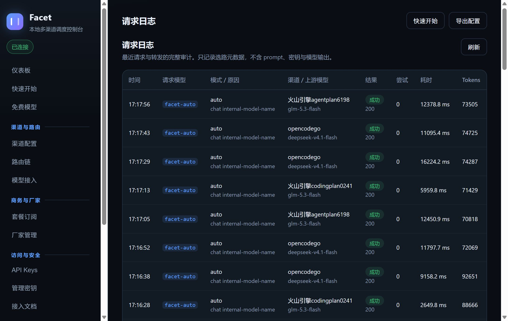
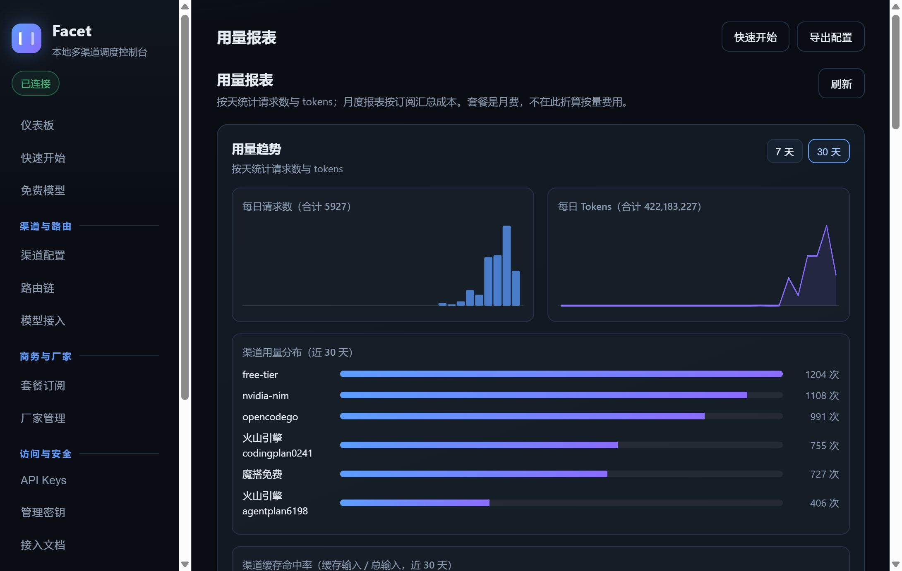
出问题了怎么办
先在下表里找到你看到的现象，照「怎么办」做。绝大多数问题都能在这一页解决。
| 你看到的 | 怎么办 |
|---|---|
| 控制台页面打不开 | Facet 没在运行。Windows 看任务栏托盘里有没有 Facet 图标，没有就重新打开 Facet；Mac / Linux 重启一下电脑或重新运行安装脚本。还不行就是端口被别的软件占了，可以换端口启动。 |
| AI 工具提示「密钥无效 / 401」 | 多半是填错了钥匙：这里要填调用密钥，不是管理员密钥。回控制台「API Keys」页重新复制一次；确认这把密钥没被停用。 |
| AI 工具提示「无可用渠道 / 503」 | 你的几把额度都用完了，或者密钥失效了。打开控制台「渠道」页看看哪几家被标成了异常：额度用完就等它恢复或再加一家；提示密钥失效就重新粘贴新密钥。 |
| 老是提示「太频繁 / 限流」 | 免登录的体验渠道本来就慢（约每分钟 2 次）。按第 4 章加上你自己的额度——免费领的、付费买的都行——就正常了。 |
| Claude Code 连不上 | 检查地址结尾：Anthropic 类工具填 http://127.0.0.1:8787，不要加 /v1；OpenAI 类工具则要带 /v1。 |
| 在控制台改了设置，好像没生效 | 控制台里保存是立即生效的，刷新一下页面再看。如果你是手动编辑了配置文件，则需要重启 Facet（Windows 托盘右键「重启网关」）。 |
| 昨天还能用，今天不行了 | 额度可能到期或用完了，密钥也可能被厂商回收。看控制台「自维护」页，它会直接告诉你「哪家的密钥失效了」。 |
| 还是解决不了 | 把「请求日志」里最近一条失败的记录、加上托盘菜单「网关日志」里的内容一起，提交到项目的 GitHub Issues，我们按这个就能定位。 |
docker compose restart。九成的「突然不灵了」重启就好。自动维护
Facet 会自己照顾自己：每天自动做一次「体检」——逐个渠道试试通不通、核对上游有没有下架模型、检查订阅额度还剩几天。绝大多数问题它自己就处理了，你不需要每天盯着。
体检结果分三类，在控制台「自维护」页里按类摆放：
上游下架了某个模型、渠道地址变了之类的小事，Facet 直接改好，改之前会先备份配置——万一不对随时能退回来。这类条目你不用管，知道一下就行。
比如上游出了更新的模型、某个渠道反复被限流。Facet 不确定要不要动，就先写成建议等你拍板——点一下「采纳」立即生效，不采纳也不影响使用。
只有 Facet 自己改不了的事才会进这里，最典型的是密钥失效（厂家那边把 key 重置了）。卡片会写清楚是哪个渠道、去哪处理，一般重新填个新 key 就好。
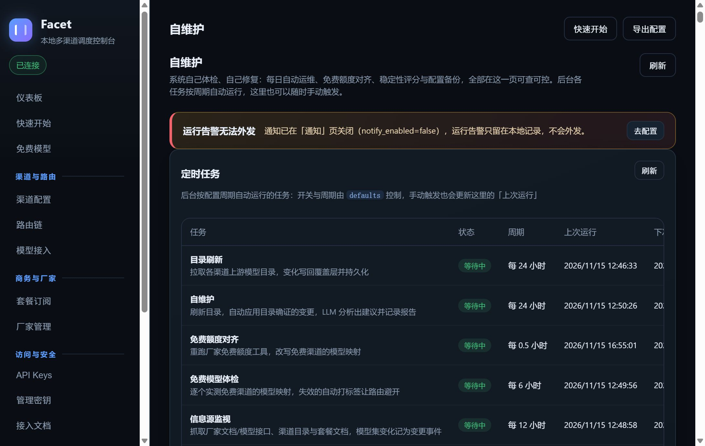
更新与卸载
更新到新版本
所有更新方式都不会动你的配置和数据——渠道、密钥、日志都留在原来的数据目录里，装完即用。
- Windows：下载新版安装包，直接双击安装即可，会自动覆盖旧版；
- macOS / Linux：重新执行一遍当初的安装脚本（
tools/macos/install.sh或tools/linux/install.sh）； - Docker：拉取新镜像后重新
docker compose up -d。
备份
Facet 的所有数据都是普通文件，没有数据库。把数据目录整个拷走，就是一份完整备份。Windows 下托盘图标右键 →「数据目录」可以直达。
卸载
| 平台 | 卸载方法 | 你的数据 |
|---|---|---|
| Windows | 控制面板 →「卸载程序」→ Facet | 默认保留。想彻底清除，再手动删掉数据目录即可 |
| macOS | 终端执行 tools/macos/uninstall.sh |
默认保留；加 --purge 参数连数据一起删 |
| Linux | 终端执行 tools/linux/uninstall.sh |
默认保留；加 --purge 参数连数据一起删 |
| Docker | 终端执行 docker compose down |
数据都在 ./data 文件夹里，删不删由你决定 |